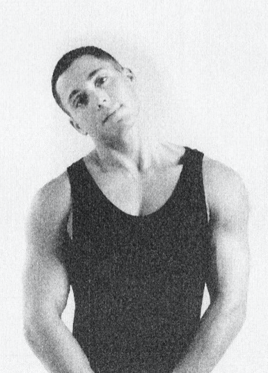
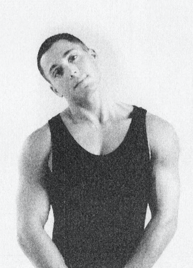

Recline on the floor, resting the upper part of your body on your upper arms. Flex your knees and rhythmically bang Them up and down against the floor in rapid succession. Your heels should remain on the floor throughout this exercise. Do this exercise for 20-30 seconds.
Breathing: Breathe normally through this exercise.


Get down on the floor on your hands and Knees with your hands positioned under your shoulders and your knees under your hips. Bring your chin up and rotate your hips so the tailbone moves up, arching your back down. Then tuck your chin into your chest and rotate your back so that your pelvis moves down, arching you're your back down.
Breathing: Inhale as you move your tailbone up and exhale as you move your tailbone down.


 

Stand upright, tilt your head sideways towards your left shoulder and hold it for five seconds, then tilt your head towards your chest and hold it 5 seconds. Then tilt your head towards your left Shoulder and hold it five seconds, and lastly tilt your head backward and hold it five seconds. Return your head to a normal position.
Breathing: Exhale as you move your head around, and inhale as you return to the upright position.


Stand upright, slowly rotate your shoulders in a forward circular motion 5 times, then reverse the movement and rotate your shoulders in a backward circular motion 5 times.
Breathing: Breathe normally but deeply as you do this exercise.


Stand upright with your arms help up, your elbows bent, and your hands together in front of your chest, with your fingertips touching and palms apart. Press inward on your fingers until their inside surfaces are almost touching. Your palms should not be touching. Release and press your fingers again.
Breathing: Breathe normally.
In a relaxed standing position, hold your arms in front of you. Clasp your right hand around your left wrist, with your thumb against the inside of the wrist. Squeeze gently but firmly five times. Repeat the procedure with the left hand Squeezing the right wrist.
Breathing: Breathe normally.